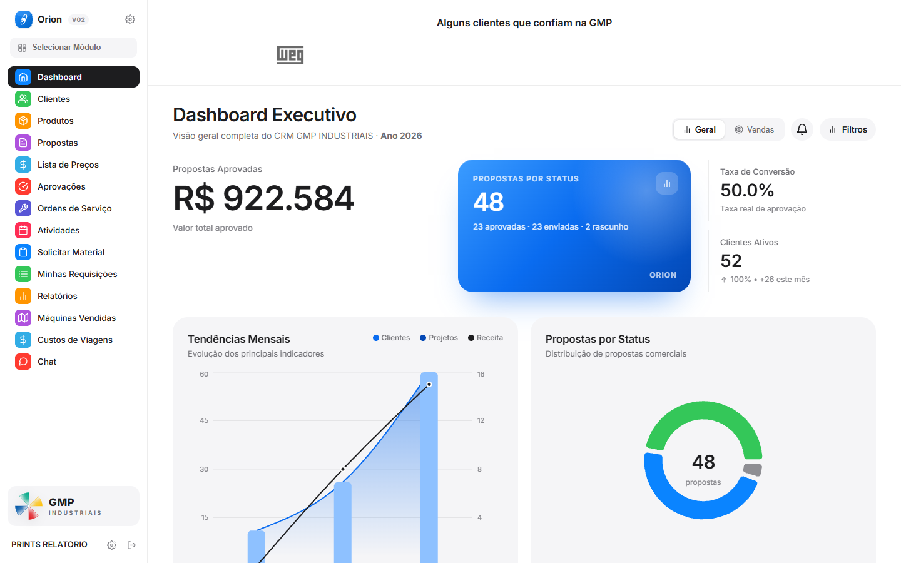
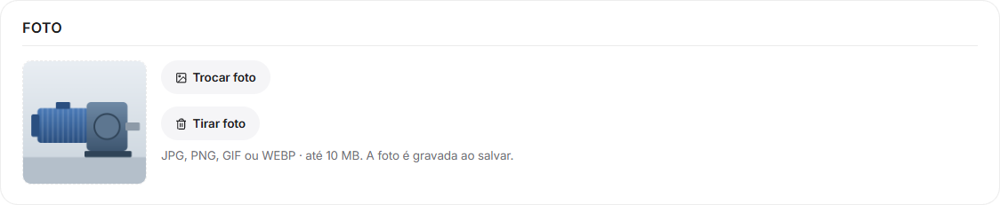
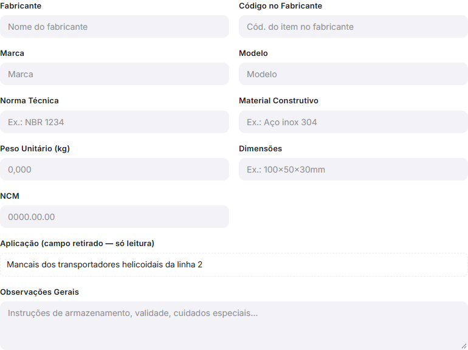
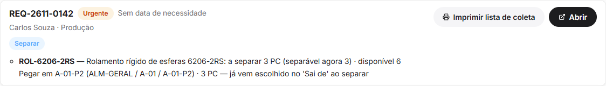
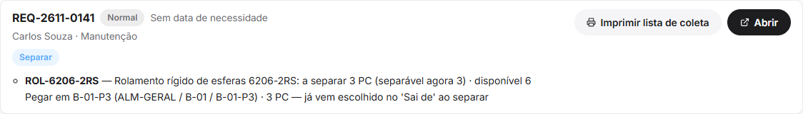
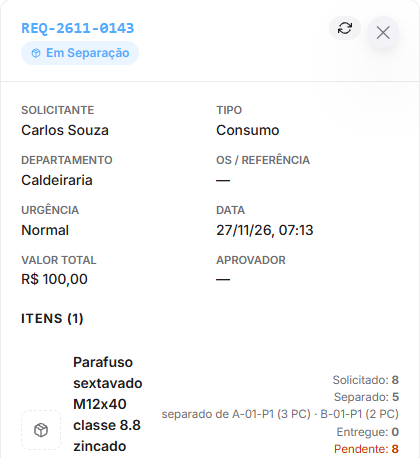
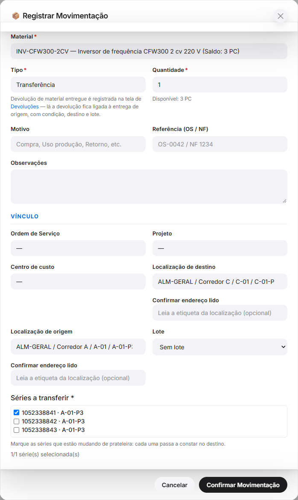
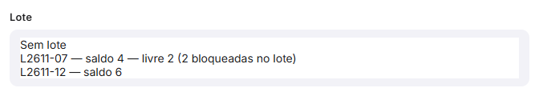

O que foi feito no sistema nesta semana
Semana de 22/11 a 28/11/2026 · CRM GMP Industriais
O sistema ganhou um visual novo em todas as telas, a proposta passou a poder sair em português e inglês ou espanhol, em dólar ou euro, o fornecedor ganhou foto na ficha e o cadastro de material ficou mais enxuto. No almoxarifado, a Fila de separação passou a dividir as prateleiras entre as requisições, a separação passou a guardar quando a peça vem de duas prateleiras, e a transferência de peça com número de série e a saída de lote com peças bloqueadas ficaram mais claras; por baixo, a entrega passou a conferir tudo antes de dar baixa em qualquer material. No total, 28h15 de trabalho, mais da metade no cuidado com prateleiras, lotes e números de série do almoxarifado.
O que você já pode ver na tela
Visual novo em todas as telas
Onde: em todo o sistema, no computador e no celular.
Antes: cada tela tinha um estilo: títulos de tamanhos diferentes, cores fortes, botões de vários formatos. Na tela de Produtos os nomes dos grupos sumiam sobre a foto, e em algumas tabelas o botão de editar aparecia como um quadradinho cinza.
Agora: fundo claro, uma cor só para as ações e o mesmo espaçamento em todos os módulos. O menu lateral ganhou ícones coloridos e a marca da GMP no rodapé. Os números dos painéis contam até o valor ao abrir, e as telas entram em sequência, com movimento suave. O painel do Comercial abre no ano corrente ("Ano 2026") e recomeça sozinho no ano que vem. No celular, o aplicativo ficou mais limpo, com cartões maiores e filtros numa linha.

Proposta para cliente de fora do Brasil
Onde: Comercial → Propostas, editar uma proposta, seção Cliente de fora do Brasil.
Antes: a proposta só saía em português e em reais. Para um cliente do Peru, por exemplo, era preciso traduzir e converter à mão, fora do sistema.
Agora: escolhe-se o idioma (português com inglês ou com espanhol), a moeda (real, dólar ou euro), o incoterm e o local de entrega. O documento sai em duas colunas, português à esquerda e a outra língua à direita, e o texto escrito em português é traduzido sozinho, com o negrito no lugar e a tradução podendo ser corrigida. Os valores continuam digitados em reais: a cotação do dia do Banco Central vem preenchida, e o documento mostra o valor convertido. A lista de propostas e o painel mostram a moeda certa, com o valor em reais embaixo. Uma cláusula avisa que vale a versão em português.
Foto do fornecedor e cadastro de material mais enxuto
Onde: Compras → Fornecedores (lápis de um fornecedor) e Compras → Materiais.
Antes: a foto do fornecedor só aparecia e só se trocava na tela de fornecedores homologados. O cadastro de material tinha três campos que ninguém usava: Descrição, Aplicação e Especificações Técnicas.
Agora: a ficha do fornecedor tem a seção Foto, com Trocar foto e Tirar foto; a mesma foto aparece em uma tela e na outra. Os três campos saíram do cadastro de material. Quem já tinha texto num deles continua vendo o texto, marcado "campo retirado — só leitura", e salvar não o apaga.


A Fila de separação não manda duas requisições à mesma prateleira
Onde: Almoxarifado → Fila de separação, na linha "Pegar em" de cada requisição.
Antes: com 3 rolamentos numa prateleira e 3 em outra, duas requisições de 3 recebiam a mesma dica de onde pegar. O almoxarife separava a primeira, voltava à mesma prateleira para a segunda e a separação era recusada.
Agora: a dica divide o que há em cada prateleira entre as requisições, na ordem de urgência: a urgente vai à primeira prateleira e a normal à segunda. Quando o saldo já foi todo indicado às requisições da frente, a tela diz isso em vez de mandar a uma prateleira vazia. A Fila também passou a agrupar por setor ou por projeto.


Separar parte de uma prateleira e parte de outra
Onde: Almoxarifado → Requisições, detalhe da requisição.
Antes: quando a peça era separada em duas vezes, 3 de uma prateleira e 2 de outra, o sistema só guardava a primeira. Na entrega, as outras 2 saíam pela regra automática, às vezes de uma terceira prateleira, e o saldo das prateleiras deixava de bater com o galpão.
Agora: o detalhe mostra as duas ("separado de A-01-P1 (3 PC) · B-01-P1 (2 PC)") e a entrega tira cada parte de onde foi pega. As frases da janela de separação e de entrega explicam isso.

Transferência de peça com número de série e saída de lote com peças bloqueadas
Onde: Almoxarifado → Movimentações → Nova Movimentação.
Antes: ao transferir um inversor com número de série de uma prateleira para outra, o saldo mudava de lugar, mas o número de série continuava dizendo que a peça estava na prateleira antiga. Na saída, a lista de lotes mostrava "saldo 4" mesmo com 2 dessas peças bloqueadas, e a saída de 4 passava levando a peça bloqueada.
Agora: a transferência lista as séries de cada prateleira e pede quais estão mudando de lugar; cada série marcada passa a constar no destino, e desfazer a transferência leva as séries de volta. Na saída, o lote aparece como "saldo 4 — livre 2 (2 bloqueadas no lote)", e a saída ou a perda de mais que o livre é recusada com a explicação.


O que foi feito por baixo — e por que importa
Parte do trabalho não muda a aparência das telas: é o “motor” que faz as contas e guarda as informações. Quando ele erra, o erro aparece depois, em forma de estoque que não bate ou de material que some. Esta semana, no motor:
A entrega confere tudo antes de dar baixa em qualquer material
O problema: numa requisição com dois materiais, o primeiro saía do estoque e só depois o sistema descobria que o segundo não podia sair (a prateleira dele estava bloqueada, ou o lote estava em inspeção, ou a peça estava separada para outra requisição). A entrega parava no meio, com metade baixada. Em outros casos a peça saía "sem lote" e o relatório de saldo por lote ficava negativo.
O que foi feito: a entrega passou a conferir todos os itens antes de tirar qualquer peça, e a dizer o motivo da recusa ("3 em inspeção só saem depois de decidida a inspeção", "o resto do lote está separado para outra requisição"). A janela de entrega limita a quantidade ao que pode sair da prateleira escolhida, a lista "Sai de" se atualiza sozinha depois de uma recusa, e a tela da requisição e a Fila mostram como "a entregar" só o que a entrega aceita. A entrega de dois itens do mesmo lote dá o mesmo resultado em qualquer ordem.
O que isso evita: entrega pela metade, peça de outra requisição levada por engano e saldo por lote negativo. É como o caixa conferir se todos os produtos têm preço antes de começar a passar a compra.
Peças bloqueadas e reprovadas ficam no lote certo
O problema: depois de liberar uma reprovação da inspeção, a devolução ao fornecedor e o sucateamento pela não conformidade podiam levar peças livres do lote no lugar das reprovadas. E a saída, a perda, a devolução ao cliente e o retalho podiam levar a peça bloqueada de um lote, deixando o bloqueio apontando para um lote vazio.
O que foi feito: todas essas saídas passaram a conferir quantas peças do lote estão bloqueadas antes de baixar, e a recusar com o caminho certo na mensagem (desbloquear antes, cancelar a não conformidade, rejeitar o sucateamento).
O que isso evita: sucatear ou devolver peça boa, e bloqueio que não corresponde a nenhuma peça no galpão.
Desfazer um lançamento não deixa o estoque torto
O problema: desfazer a entrada de uma devolução que tinha ido para a quarentena deixava 2 peças bloqueadas que já não estavam no estoque. Desfazer a entrada de um lote com peças bloqueadas, ou desfazer um desbloqueio depois de o lote ter sido esvaziado, fazia o mesmo. Desfazer a devolução de uma requisição já excluída tirava as peças duas vezes (o estoque caía de 5 para 3). E desfazer um ajuste de prateleira antigo passava por cima de uma contagem mais recente.
O que foi feito: nesses casos o desfazer passou a ser recusado, dizendo o que fazer antes. A devolução feita depois de uma exclusão interrompida passou a contar o que a exclusão já tinha devolvido. O histórico de Movimentações passou a dizer de quais prateleiras a peça saiu ("Saiu de: A 3 · B 3").
O que isso evita: estoque e bloqueio que não batem com o que está no galpão depois de corrigir um lançamento.
Achar material pelo fornecedor e requisição com projeto
O problema: buscando, por exemplo, "aços" em Materiais, o material cujo fornecedor é a Aços Brasil não aparecia, nem pelo código que o fornecedor usa na nota. E a requisição não tinha onde dizer o projeto: a Fila só sabia o projeto quando a requisição citava uma OS.
O que foi feito: a busca de materiais acha pelo nome e pelo código do fornecedor, e a lista mostra os fornecedores embaixo do nome. O formulário da requisição ganhou o campo Projeto, que vem preenchido quando a OS já tem projeto e recusa projeto de outro cliente.
O que isso evita: procurar material com o nome errado na mão e requisição sem saber para qual obra vai.
O sistema não para para todos na hora da atualização
O problema: numa noite de atualizações seguidas, a tela ficou branca para quem abriu o sistema no instante da troca, e depois todas as telas vieram vazias, para todo mundo, parecendo que os dados tinham sumido. Não tinham: o sistema contava os acessos da empresa inteira como se fossem de uma pessoa só e passou a recusar todos.
O que foi feito: a página passou a se recuperar sozinha ("Atualizando o sistema...") quando abre no meio de uma atualização, e o limite de acessos passou a contar por usuário.
O que isso evita: a empresa inteira parada porque algumas abas ficaram abertas durante uma atualização.
Também foram feitos: o modelo de contrato e a capa da proposta de Projeto Conceitual; o valor do item da proposta digitado no formato brasileiro (23.550,00 não vira mais 23,55); apagar uma família ou um produto libera o nome e o código para cadastrar de novo; e a entrada num lote já vencido passou a avisar que a saída fica bloqueada até liberar o vencimento.
Tempo gasto
| O que foi feito | Tempo |
|---|---|
| Planejamento das alterações, estimativas de tempo e relatório | 4h30 |
| Visual novo das telas (computador e celular), painel por ano e ajustes no Comercial | 4h |
| Propostas: inglês e espanhol, dólar e euro, modelo do Projeto Conceitual | 3h |
| Almoxarifado e Compras: busca pelo fornecedor, projeto na requisição, Fila agrupada, foto do fornecedor e campos do material | 1h30 |
| Almoxarifado: prateleiras, lotes e números de série (entrega, separação, Fila, transferência, saída e desfazer lançamentos) | 15h15 |
| Total | 28h15 |
Tempo medido pelo registro do trabalho feito na semana.
Quer conferir?
- Abra Comercial → Propostas, edite uma proposta e, em Cliente de fora do Brasil, escolha "Português + inglês" e "Dólar americano": a cotação do Banco Central aparece sozinha. Salve e abra a pré-visualização: o documento sai em duas colunas.
- Abra Compras → Fornecedores, clique no lápis de um fornecedor e use Trocar foto: a foto aparece também em Fornecedores homologados.
- Abra Almoxarifado → Fila de separação: o rolamento 6206-2RS aparece em duas requisições, cada uma com uma prateleira diferente em "Pegar em". No campo Agrupar, escolha "Por setor".
- Abra Almoxarifado → Requisições e clique em REQ-2611-0143: o item mostra as duas prateleiras de onde foi separado.
- Em Almoxarifado → Movimentações → Nova Movimentação, escolha o inversor CFW300 e o tipo Transferência: a tela pede as séries. Troque para o anel de vedação O-ring e o tipo Saída: o lote L2611-07 mostra "livre 2 (2 bloqueadas no lote)".